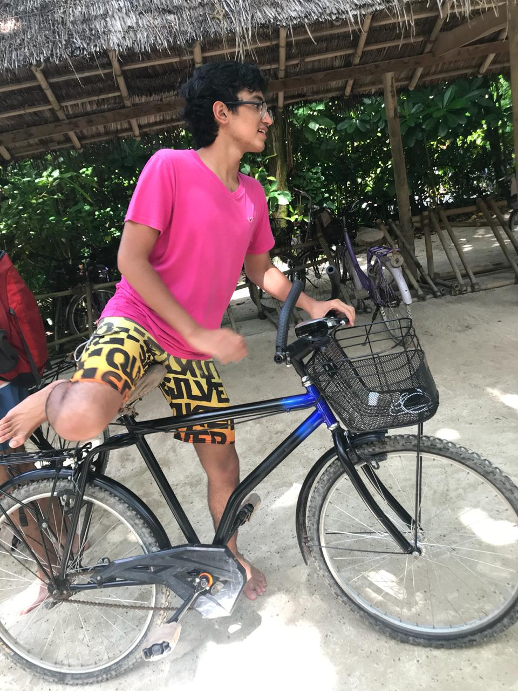

my passion
Keerat is a 17 year old boy who lives in Gurgaon ( Haryana ). He is the twin brother of Karam,to whom he is both protective and supportive. He is currently studying the IB curriculum at The Shri Ram School,Moulsari. Inquisitively curious,he has a quest for knowledge and is specifically interested in economics and world affairs and how both these subjects are interlinked with Global History. Logical and analytical by nature,his research is based on extensive self study and data. Keerat loves to travel and trek,Outdoor activities stimulate him to introspect and reach conclusions with clarity. He loves playing and watching football since he was 5 years old. Soft at heart,sharp in conversations and extremely sensitive to animals.